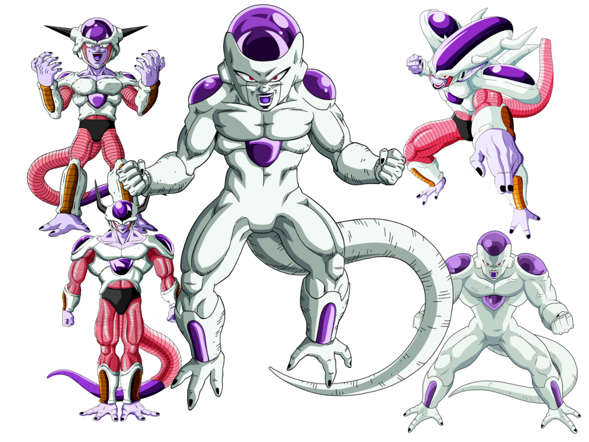

ㅤ
ㅤ

La batalla culmina cuando Freezer, en su desesperación por vencer a los guerreros Z, se transforma en varias formas, cada una más poderosa que la anterior. Finalmente, en su forma final y más poderosa, Freezer se enfrenta a un Goku que ha llegado al límite de sus habilidades.
ㅤ
La saga alcanza su clímax cuando, tras ver la muerte de su amigo Krillin a manos de Freezer, Goku se transforma en un Super Saiyajin por primera vez. En esta nueva forma, Goku demuestra ser un rival formidable para Freezer, empujando la batalla a un nivel épico.

ㅤ
A pesar de su increíble poder, Freezer es finalmente derrotado por Goku, quien le muestra piedad al darle una oportunidad para escapar. Freezer, sin embargo, intenta atacar a Goku por la espalda, lo que resulta en su propia destrucción. El planeta Namek se destruye en el proceso, pero Goku logra escapar justo a tiempo.